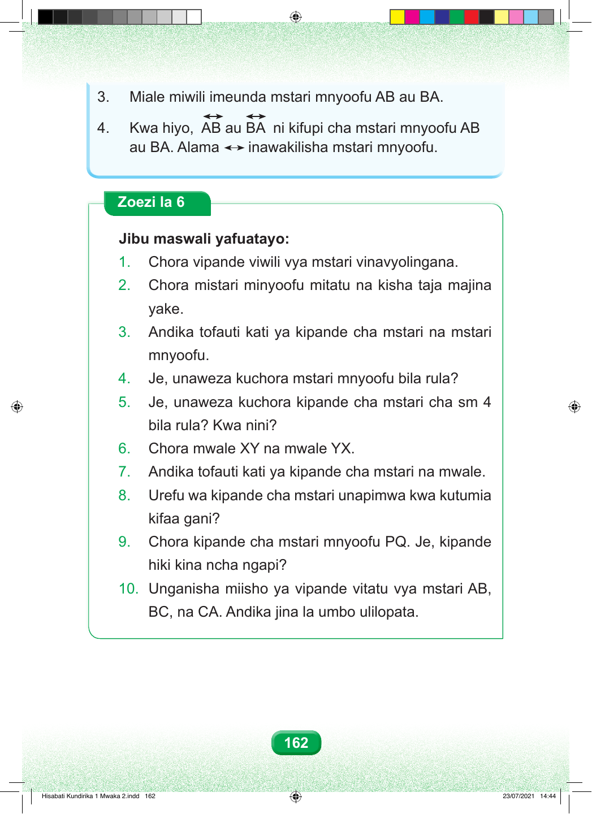

3. Miale miwili imeunda mstari mnyoofu AB au BA. 4. Kwa hiyo, AB au BA ni kifupi cha mstari mnyoofu AB au BA. Alama inawakilisha mstari mnyoofu. Zoezi la 6 Jibu maswali yafuatayo: 1. Chora vipande viwili vya mstari vinavyolingana. 2. Chora mistari minyoofu mitatu na kisha taja majina yake. 3. Andika tofauti kati ya kipande cha mstari na mstari mnyoofu. 4. Je, unaweza kuchora mstari mnyoofu bila rula? 5. Je, unaweza kuchora kipande cha mstari cha sm 4 bila rula? Kwa nini? 6. Chora mwale XY na mwale YX. 7. Andika tofauti kati ya kipande cha mstari na mwale. 8. Urefu wa kipande cha mstari unapimwa kwa kutumia kifaa gani? 9. Chora kipande cha mstari mnyoofu PQ. Je, kipande hiki kina ncha ngapi? 10. Unganisha miisho ya vipande vitatu vya mstari AB, BC, na CA. Andika jina la umbo ulilopata. 162 Hisabati Kundirika 1 Mwaka 2.indd 162 23/07/2021 14:44